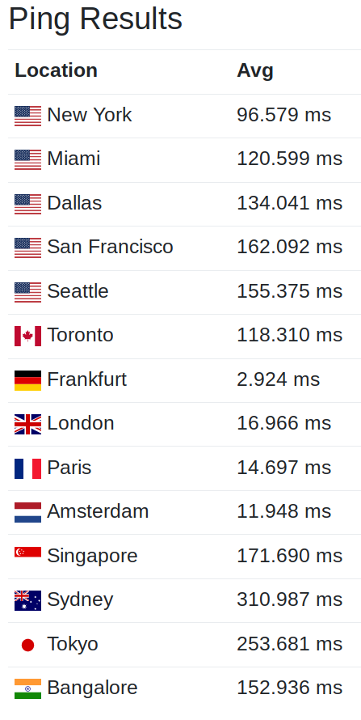

Our infrastructure
Number of servers
- Hetzner: 20 physical machines
- Hetzner Cloud: 8 virtual machines
- Google Cloud: 12 active instances
- Total: 40 servers
Memory, storage, processing power
- 1.5 Terabytes of RAM
- 18 Terabytes of storage
- 1.7M Bogomips on 240 CPU cores
Network traffic
- 180 Terabytes served this year
- ~50 mbits/s out, 20 mbits/s in
- 120 mbits/s out before, due to QNAP
Latency

Ping to kiki.mb.o from different parts of the World
MusicBrainz Services I
Number of queries served this year
11 Billions of 200s answers
MusicBrainz Services II
- Incoming Requests: 850 req/s
- Handled by upstreams: 280 req/s
MusicBrainz Services III
- MB Website mean response time: 240 ms
- WS mean response time a bit worse: 20 to 30ms
SOLR
- 6 servers on Hetzner Cloud
- 180 req/s during peak time
- Worst mean response time: 125 ms
- Best mean response time: 75 ms
- full redundancy, automatic fail over
Hetzner Cloud I
- Hosting adds 10ms latency on WS (more hops)
- VM CPU performance isn't guaranteed
Hetzner Cloud II
- low cost: 99€ / month for 6 VMs (SOLR)
- convenient
- not 100% on, due to Hetzner maintenance ops
Docker I
- 170 containers running
- our setup is not standard enough
- kubernetes is still very far
Docker II
- some issues related to git2consul
- docker-server-configs critical
Docker III
- volumes management is a pain
- some containers are critical
- restarting docker / rebooting machine not possible
Stability
- 99.9% availability of core services
- limited failure impact
- crappy cpu fans (6 were replaced)
- still too many SPoFs
Soon...
- work at reducing SPoFs
- improved database backups using Barman
- moving more services to VMs
- upgrading to 18.04
- upgrading docker + consul